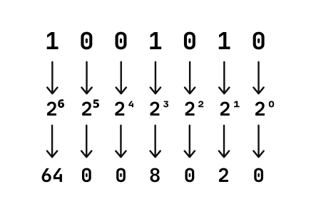

1000011
1001111
1000100
1000101
Background
The sequence of 1's and 0's make up a number called Binary. How Binary works is that each digit is made up of a power of 2 (e.g. 2⁰, 2¹, 2²). For every digit that is 1, you add the power of 2's together to produce a number.
In the example above, the 1's are filled in at exponents 2⁷, 2⁶, 2³ and 2². Each value corresponds to 128, 64, 8, and 2, which adds up to 202.
Any data can be represented with Binary, and letters is one of them. Whenever you type any letter on your keyboard, binary numbers are being sent to the computer to be typed in. How does that happen? Every letter on your keyboard is associated with an ASCII (American Standard Code for Information Interchange) value. These values are regular integers (e.g. 20), which are easier to be read by a human. When you add up the 1's and 0's of a Binary number of a letter, it should add up to the ASCII value of the letter. Using the example above, the ASCII value of 202 is associated with a mysterious letter: ╩. We keep all of the ASCII values and their corresponding letters on an ASCII table. This is done to provide one central place for where you can find your letter values.
Here is an example of an ASCII table (this does not include all ASCII values):

1000011
Let's solve for this binary number:

When we add our values together, it produces 67. 67 on the ASCII table corresponds with an uppercase C. Now we have found our first letter.
1001111
Let's solve for this binary number:

When we add our values together, it produces 79. 79 on the ASCII table corresponds with an uppercase O Now we have found our second letter.
1000100
Let's solve for this binary number:

When we add our values together, it produces 68. 68 on the ASCII table corresponds with an uppercase D. Now we have found our third letter. You probably see where this is going.
1000101
Let's solve for this binary number:

When we add our values together, it produces 69. 69 on the ASCII table corresponds with an uppercase E. Now we have found our fourth and final letter.
CODE
Piecing the letters together forms a word 'CODE'. This goes to show that words can be represented with Binary, which is how your computer understands what letters to input when you are typing on your keyboard.
Tech Club
When: Every Wednesday during lunch
Where: Room 2071
What: A club that explores tech together, making it fun and accessible for everyone at our school
What should I bring?: Your curiosity, lunch, and a laptop if you own one
Google Classroom Code: lljme5c